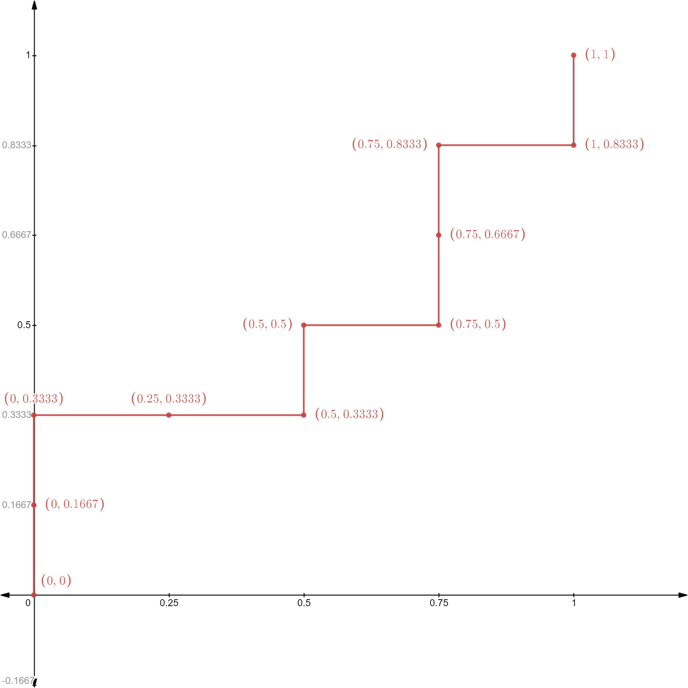
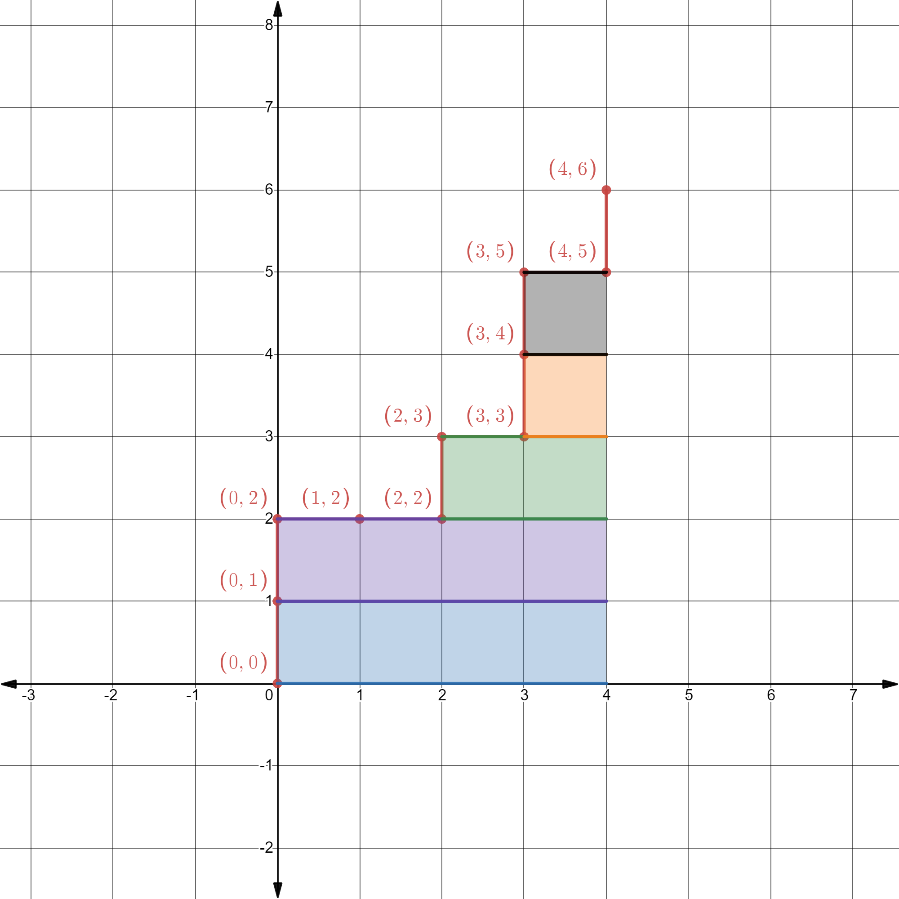

For students who are learning the basics of Machine Learning, one of the most challenging topics is the ROC curve and the AUC measure of a classifier. While students may be able to mechanically remember how to draw the ROC curve, they often do not fully understand why it is done that way. Similarly, while students know that AUC is the area under the ROC curve, it is not easy to understand why AUC measures the “the probability that a classifier will rank a randomly chosen positive instance higher than a randomly chosen negative one” (Wikipedia). The goal of this post is to provide an intuitive explanation for the two “why” questions. More specifically, I want to
- use a concrete example to walk through how the ROC curve is created, which leads to an intuitive understanding of what the ROC curve is actually trying to visualize;
- provide a visual “proof” for the meaning of the AUC measure, without relying on any formal mathematical derivations.
A Concrete Example
For concreteness, let’s consider a binary classification problem where the outcome is either Positive (\(P\)) or Negative (\(N\)). Suppose a classifier has made the following predictions (more specifically, the predicted probabilities of being in the \(P\) class) on a validation dataset of 10 records:
| ID | Actual Class Label | Predicted Probability of \(P\) |
|---|---|---|
| 1 | \(P\) | 0.99 |
| 2 | \(P\) | 0.98 |
| 3 | \(N\) | 0.96 |
| 4 | \(N\) | 0.90 |
| 5 | \(P\) | 0.88 |
| 6 | \(N\) | 0.87 |
| 7 | \(P\) | 0.85 |
| 8 | \(P\) | 0.80 |
| 9 | \(N\) | 0.70 |
| 10 | \(P\) | 0.65 |
Note that this is meant to be just an example – there’s nothing inherently special about the values of actual outcomes or predicted probabilities, and the intuitions explained later are generally applicable.
The ROC Curve
The ROC curve of a classifier lives on a two-dimensional plot, typically with False Positive Rate (FPR) as the \(x\)-axis and True Positive Rate (TPR) as the \(y\)-axis. If you are more familiar with the precision / recall terminologies, the False Positive Rate is equivalent to \(1-Recall_N\) and the True Positive Rate is equivalent to \(Recall_P\).
Mechanically, the ROC curve is constructed by calculating pairs of (FPR, TPR) for different prediction cutoff values, and plot them on a graph. It is convenient to think about a process where you start with a very high cutoff value, gradually reduce it, and calculate / plot (FPR, TPR) along the way. This is also why the table above has been ordered by the predicted probabilities (from high to low). So, let’s do this step-by-step for the above concrete example (and the ROC curve is provided at the end).
- [Step 1] If you pick a cutoff value higher than 0.99, no record will be predicted as \(P\) and all 10 records will be predicted as \(N\). This results in a TPR = 0 and FPR = 0;
- [Step 2] If you pick a cutoff value between 0.99 and 0.98, record 1 will be predicted as \(P\) and records 2-10 will be predicted as \(N\). This results in TPR = 1/6 and FPR = 0 (because record 1 is in \(P\) and your classifier correctly predicts that);
- [Step 3] If you pick a cutoff value between 0.98 and 0.96, records 1-2 will be predicted as \(P\) and records 3-10 will be predicted as \(N\). This results in TPR = 2/6 and FPR = 0;
- [Step 4] If you pick a cutoff value between 0.96 and 0.90, records 1-3 will be predicted as \(P\) and records 4-10 will be predicted as \(N\). This results in TPR = 2/6 and FPR = 1/4 (because record 3 is in fact \(N\), which means your classifier has 1 false positive prediction);
- …
- [Step 10] If you pick a cutoff value between 0.70 and 0.65, records 1-9 will be predicted as \(P\) and record 10 will be predicted as \(N\). This results in TPR = 5/6 and FPR = 1;
- [Step 11] If you pick a cutoff value below 0.65, all records will be predicted as \(P\) and no record will be predicted as \(N\). This results in TPR = 1 and FPR = 1.

Having walked through the above process of drawing the ROC curve, you may realize two important things:
- It doesn’t really matter which specific cutoff values you choose. Essentially, you are going through the validation dataset from top to bottom (ranked based on predicted probability of being in \(P\)), one record at a time.
- As you travel from top to bottom, looking at the actual outcome labels: if you hit a \(P\), it means that the classifier would produce a true positive prediction, and the ROC curve would go up; if you hit an \(N\), it means that the classifier would produce a false positive prediction, and the ROC curve would go right.
The second point is, in my opinion, a very useful intuition to have about the ROC curve, because it offers an intuitive understanding of what the ROC curve is visualizing \(\rightarrow\) the performance of a classifier in terms of its ability to rank positive records ahead of negative ones (based on predicted probabilities of being positive). Why? Because the more positive records ranked ahead of negative ones, the more your ROC curve can go up without going right (i.e., the curve would occupy more space in the upper-left corner).
The AUC Measure
Based on the above intuition of the ROC curve, we can already derive a qualitative interpretation of the area under the ROC curve, or AUC. A larger AUC indicates that the ROC curve is able to go up for more steps before it needs to go right, which means that more positive records are ranked ahead of negative ones.
It turns out that AUC also has a very nice quantitative interpretation, i.e., the probability that a classifier will rank a randomly chosen positive instance higher than a randomly chosen negative one. However, it is not immediately clear why the area under the ROC curve maps nicely into this very particular probability. Below, I offer a visual “proof” of this fact.
To begin, it would be easier if we scale the \(x\)-axis and \(y\)-axis of the ROC curve by the number of negative and positive records. Doing so doesn’t change the ROC curve at all - it simply converts all the tick marks on the two axes into integers for convenience. In particular, suppose there are \(M_P\) number of positive records and \(M_N\) number of negative records, then the marks on the \(x\)-axis are scaled from \(\{0,\frac{1}{M_N},\frac{2}{M_N},\ldots, 1\}\) into \(\{0,1,2,\ldots, M_N\}\), and the marks on the \(y\)-axis are scaled from \(\{0,\frac{1}{M_P},\frac{2}{M_P},\ldots, 1\}\) into \(\{0,1,2,\ldots, M_P\}\). In our example, \(M_P=6\) and \(M_N=4\) and the scaled ROC curve looks like the following. After scaling, the ROC space is sliced up into 24 (\(=4 \times 6\)) cells, each having an area of 1 - this layout will make it convenient to describe the visual proof.

Here comes the visual proof. First, think about record #1, which is in class \(P\), that causes the ROC curve to jump up from \((0,0)\) to \((0,1)\). Notice that it has four cells, shaded in blue, to its right. If you recall the intuition we have developed from drawing the ROC curve, this observation means that there are precisely 4 records in class \(N\) that rank lower than this \(P\) record. Why? Because the ROC curve needs to move right 4 times before it hits the right boundary. Put differently, the area of the blue region (which is 4) represents the number of ways to pick a record in class \(N\) such that it ranks lower than this \(P\) record.
More importantly, the same way of thinking applies to each \(P\) record. Take the third record in \(P\) (which is record #5 in our table) as an example, it has 2 cells to its right, shaded in green. That simply means there are 2 ways to pick a record in class \(N\) such that it ranks lower than this \(P\) record.
As a result, the area under the ROC curve, which is the same as the area of all the shaded cells, amounts to the total number of ways to pick a record in class \(N\) such that it ranks lower than each particular \(P\) record. Now, keep in mind that the area of the entire ROC space (i.e., 24) is simply the total number of ways to pick a pair of \(P\) record and \(N\) record, you will see that the de-scaled AUC (i.e., area of the shaded region divided by the total area) would then represent the probability of choosing a pair of \(P\) record and \(N\) record and having the \(P\) record rank higher than the \(N\) record.
Concluding Remarks
By walking through a concrete example, I hope to have articulated the intuitions behind the ROC curve and the AUC measure. To conclude, I want to share three remarks that appear interesting to me personally.
- Although students rarely need to draw the ROC curve by hand (which can be highly cumbersome for large datasets), doing so for a tiny example is still useful for building up the intuition. The game-like procedure, where the curve moves up when you hit \(P\) and moves right when you hit \(N\), nicely reflects why the ROC curve captures a classifier’s performance in ranking data based on predicted probabilities.
- For students who are familiar with calculus, it might be tempting to try to prove the probabilistic interpretation of AUC by doing (Riemann-style) integration. While it is certainly feasible, I find it more intuitive to think about it not as the area under the curve, but instead as the area to the right of the curve (in other words, think about a Lebesgue-style integration). Mathematically, they are equivalent, but the latter seems to be easier to wrap one’s head around.
- (Updated 1/28/2023) The above walkthrough also provide an intuitive way to understand why, for a binary classifier, AUC of class \(P\) always equals AUC of class \(N\). Suppose now the class of interest is \(N\) (rather than \(P\)), then two things will change: (1) we should rank the validation dataset based on predicted probability of \(N\), which, by definition, reverses the ranking by \(P\); and (2) a record with class \(N\) is now considered correct prediction, so we also switch going up with going right. The net result of these two changes is that the ROC curve of class \(N\) looks like that of class \(P\), only in reverse (i.e., start from \((1,1)\) and traveling backwards to \((0,0)\)). The area under the curve therefore does not change.